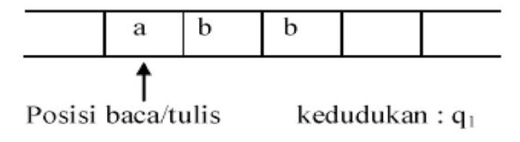
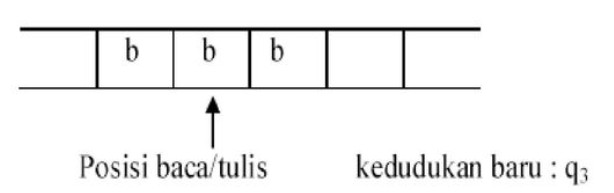

Mesin turing dirancang mengatasi kelemahan FSA dan PDA
Caranya dengan mempresentasikan logika kerja mesin tidak menggunaka stack sebagaimana representasi dalam PDA, tetapi menggunakan representasi pita yang dapat dibaca dan ditulisi
Mesin turing diwakili oleh sebuah pita panjang tak terhingga. Pada pita dapat ditulisi/dibacakan sebuah simbol
Setelah pita ditulisi maka simbol pita kemudian akan berubah menjadi simbol yang baru saja dituliskan
Mesin turing didefinisikan sebagai 7 tuple M = {Q, ∑, Γ, S, þ, Δ, F}
Q : himpunan hingga state,
∑ : alfabet input,
Γ : simbol pada pita (meliputi pula blank)
S : state awal, S ∈ Q
þ : simbol kosong (blank) (bukan bagian dari ∑)
Δ : fungsi transisi
F : state akhir, F ∈ Q
1. Lihat state semula dan simbol yang ditunjuk head
2. Berdasarkan fungsi transisinya, tentukan :
- state berikutnya
- lakukan penulisan ke pita
- gerakkan head ke kanan dan ke kiri
3. Bila dari pasangan state dan simbol yang ditunjuk head tidak ada lagi fungsi transisinya, berarti mesin turing berhenti
4. Bila mesin turing berhenti di dalam state final (F), berarti diterima. Sebaliknya jika mesin berhenti tidak pada state akhir, berarti inputan tersebut ditolak.
Gerakan mesin turing diwakili oleh fungsi transisi :
Δ(qi, a) = (qj, b, X) : Mesin kedudukan membaca simbol masukan a,
Gerakan : Mesin berubah ke status qj, menulis b dan posisi baca/tulis bergerak X (berupa R = gerak ke kanan atau L = gerak ke kiri)
Untuk gerakan fungsi transisi Δ(q1, a) = (q3, b, R) artinya :
Setelah membaca simbol a, kedudukan mesin = q3, menulis b dan bergerak ke kanan
Hasil sebagai berikut :
Dimiliki mesin turing dengan definisi M = {Q, ∑, Γ, S, F, þ, Δ,}
Q = {q1, q2}
∑ = {a, b}
Γ = {a, b, þ}
S = {q1}
F = {q2}
Δ : Δ (q1, a) = (q1, a, R)
Δ (q1, b) = (q1, a, R)
Δ (q1, þ) = (q2, þ, L)
Jika diinputkan string "abbba", maka gerakan mesin turing akan menjadi seperti apa?
Dapat dinyatakan bahwa mesin turing tersebut apabila diumpamakan sederetan simbol a dan atau simbol b dengan jumlah 0 atau lebih akan mengantar pada kedudukan final q2. Dengan kata lain mesin turing tersebut dapat mengenali bahasa (a, b)*.